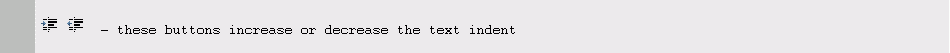
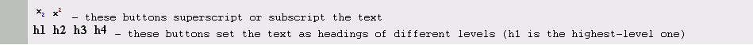

Working with dhtmlxEditor
dhtmlxEditor is used to create texts that are going to be published on the Internet, and to be read using web browsers.
Text Formatting
Text formatting sets the way the text will look like. dhtmlxEditor's formatting tools are a very easy way of making the text look nice and readable.
Making the font bold, italic, underlined or stroked through contributes to adding expressiveness:
Note: If the user applies any of these options to the selected text, the toolbar button will be highlighted. In case the formatting needs to be removed, the user should press the highlighted button again. Any of the options can be applied to the text individually or in any combination with other options.
The user can set the text relative to the editing area which is called text alignment.There are four types of alignment available in dhtmlxEditor:
- left—the text is aligned along the left margin;
- right—the text is aligned along the right margin;
- justified—the text takes the entire space available;
- centered—the text is centered.
The selected text can be arranged in the following types of lists:
- numbered list;
- bulleted list.
The user can easily increase or decrease the text indent:

dhtmlxEditor provides a number of functions that allow users to manipulate the following font settings in the editing area:
- subscript and superscript;
- headings H1-H4.
